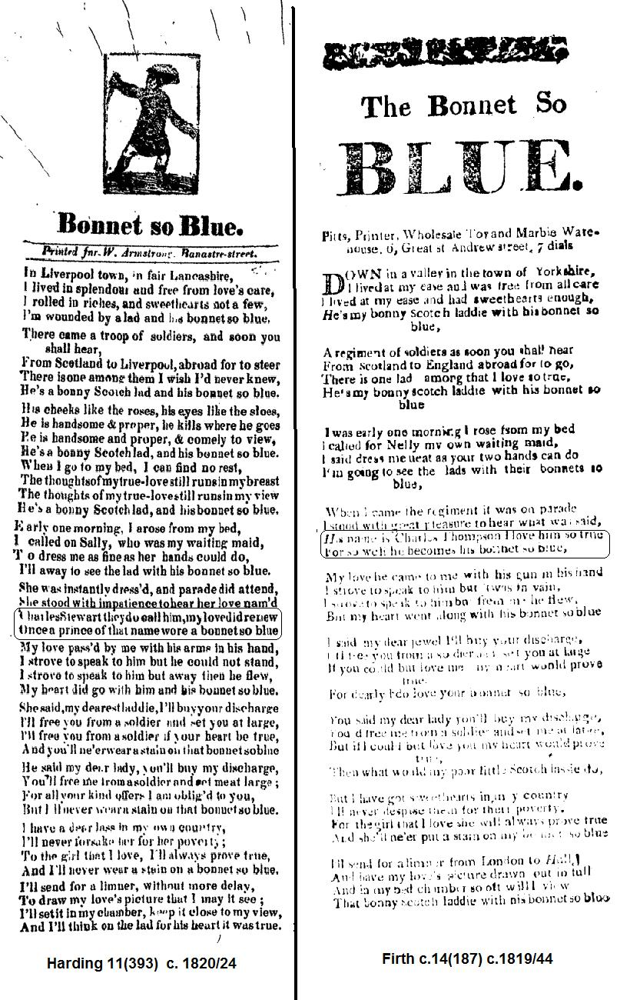

The Bonnet so Blue
Le bonnet bleu
Two versions of a 19th century broadside song: about another Charles Stewart - or was it Charles Thompson?
Tune- Mélodie"Bonnets of Blue" from "Folks Songs of the Catskills &c." from George Edward
Alternate tune
"Jacket so blue", from "Songs the whalesmen sung" in the "Journal of Catalpa, 1856,
Sequenced by Ch.Souchon

Music sheet
|
To the lyrics: Several broadside versions of this song can be found at the Bodleian Library of the Oxford University In a Yorkshire (or Lancashire) garrison town an English lady, hypnotized by his uniform featuring the famous "bonnet so blue", makes overtures to a handsome Scotch soldier. She even offers to buy his discharge. But her heart's desire has his own sweetheart in his country. The lady asks for his portrait: this at least is granted. In the first version of the song, Harding 11(393) as in the previous song, "blue bonnet" is no longer a Jacobite symbol. In the second version, Firth c.14(187), the reference to Bonnie Charlie has disappeared altogether! |
A propos du texte: Plusieurs broadsides avec ce chant sont conservés à la Bibliothèque Bodléienne de l'université d'Oxford. Dans une ville de garnison du Yorkshire (ou du Lancashire) une dame anglaise succombe au prestige de l'uniforme d'un bel Ecossais, (uniforme comportant le fameux "bonnet bleu") et lui fait des avances. Elle lui offre même de financer sa libération du service. Mais il a déjà une fiancée au pays. La dame se consolera en faisant faire son portrait. Dans la première version, comme dans le chant précédent, le "bonnet bleu" n'est plus une référence Jacobite. Dans la seconde, le nom du Prince Charles n'est plus évoqué. |

| Version 1 | Version 2 | Traduction Version 1 |
|---|---|---|
|
1. In Liverpool (*) town, in fair Lancashire. I lived in splendour and free from love's care. I rolled in riches, and sweethearts not a few I'm wounded by a lad and his bonnet so blue.
2. There came a troop of soldiers, and soon you shall hear,
3. His cheeks like the roses, his eyes like sloes
4. When I go to my bed, I can find no rest
5.Early one morning I arose from my bed
6. She was instantly dress'd and parade did attend,
7. My love pass'd by with his arms in his hand.
8. She said: "My dearest laddie, I'll buy your discharge
9. He said, "My dear lady, you'll buy my discharge
10. I've a dear lass in my own country
11. "I'll send for a limner without more delay
(*) Other versions have: Kingston-upon-Woolwich, Manchester-in-Lancashire. |
Down in a valley, in the town of Yorkshire, I lived at my ease, and was free from all care; I lived at my ease, had sweethearts enough... He's my bonny Scotch laddie with his bonnet so blue.
A regiment of soldiers as soon you shall hear,
When I came, the regiment it was on parade,
My love he came to me with a gun in his hand;
I said, my dear jewel, I'll buy your discharge;
You said, my dear lady, you'll buy my discharge;
But I have got sweethearts in my country;
I'll send for a limner from London to Hull, |
1. "Je vivais à Liverpool dans le Lancashire Dans l'opulence et d'amour je n'avais que faire. J'avais la richesse et plus encor d'amoureux. Quand j'eus le cœur blessé par l'homme au bonnet bleu. 2. Des soldats sont arrivés, vous m'entendez bien, D'Ecosse et Liverpool était sur leur chemin. L'un d'entre eux n'eût jamais dû paraître à mes yeux C'est un bel Ecossais avec un bonnet bleu. 3. De rose sont ses joues. On voit ses yeux briller. Digne, mais avenant: la guerre est son métier. Digne, mais avenant. Et quel port majestueux! Ah, le bel Ecossais avec son bonnet bleu! 4. Désormais sur mon lit le sommeil ne vient point, Car sa pensée m'obsède. Elle oppresse mon sein. Oui, sa pensée m'obsède et mes yeux amoureux Me font voir le bel homme avec son bonnet bleu! 5. De bonne heure, un matin, je surgis de mon lit Et j'appelle aussitôt ma suivante, Sally. Il faut qu'elle m'attife aussi bien qu'elle peut. Je m'en vais, de ce pas, voir l'homme au bonnet bleu!" 6. Sur le champs de parade elle se rend tout droit, Espérant, qu'à l'appel, son nom elle entendra. "Charles Stuart! Je ne l'en aimerai que mieux: Un Prince de ce nom portait le bonnet bleu. 7. Mon amour est passé, les armes à la main. J'ai voulu lui parler. Il ne s'arrêta point. J'ai voulu lui parler. Mais il a fui ces lieux. C'est mon cœur qu'il emporte avec son bonnet bleu." 8. Elle a dit: "Mon ami, je suis prête à payer Afin que de l'armée vous soyez congédié. Oui, je le ferai, si votre cœur est vertueux, Que sans tache à jamais reste ce bonnet bleu." 9. "Oh, Madame, a-t-il dit, vous voulez donc payer Afin que du service on puisse m'exempter? Je vous suis obligé. Le geste est généreux, Mais l'accepter serait ternir mon bonnet bleu. 10. Car là-bas, au pays, ma fiancée m'attend. Elle est pauvre. La quitterai-je pour autant? Servir deux maîtres: cœur fidèle ne le peut Nulle tache ne doit ternir mon bonnet bleu." 11. "Sans plus attendre, afin d'avoir votre portrait, Je fais venir un peintre. Et pour mieux l'admirer, J'en ornerai ma chambre et j'aurai sous les yeux Les traits d'un homme dont le cœur est vertueux." |